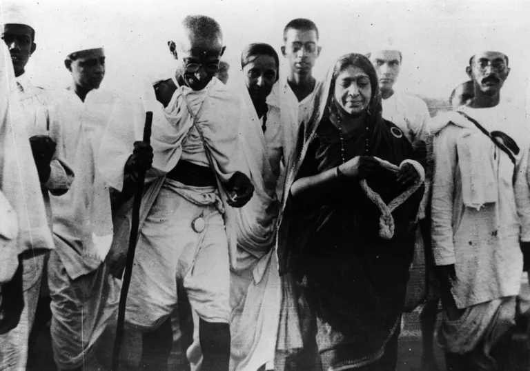

The father of the Nation
The Revolutionary Journey to achieve a sense of liberty and Independence.
" Gandhi resisted evil with as much vigor and power as the violent resister, but he resisted with love instead of hate . True pacifism is not unrealistic submission to evil power. It is rather a courageous confrontation of evil by the power of love. "
- Dr. Martin Luther King, Jr, American Baptist minister, and activist